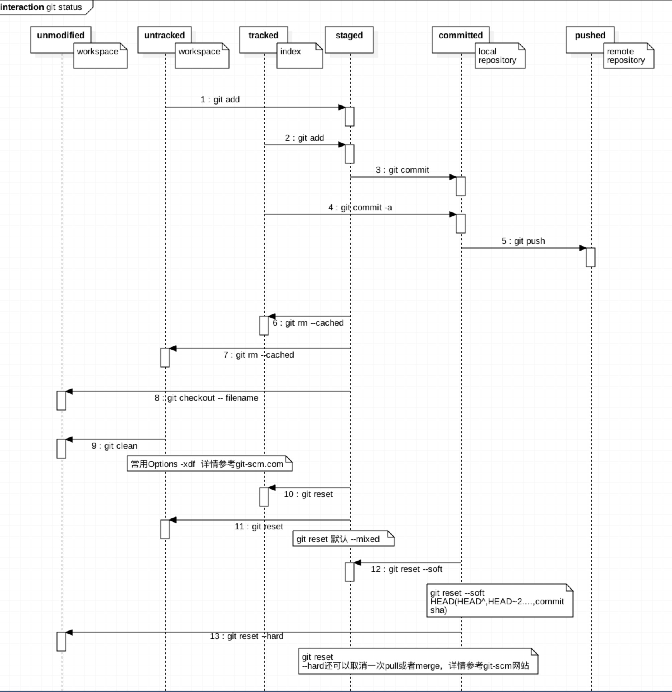

几乎是我全部所学了
概念辨析
远程和本地 remote/local
远程：远程仓库
本地：working tree
远程分支和本地分支
远程（跟踪）分支：远程仓库上的分支
https://git-scm.com/book/zh/v2/Git-%E5%88%86%E6%94%AF-%E8%BF%9C%E7%A8%8B%E5%88%86%E6%94%AF
本地分支：本地的分支
可以单独创建远程分支，可以单独创建本地分支。
但当本地push上远程仓库之后，远程仓库将会产生对应同名（或者可以指定名字，不确定）的远程分支。
同理，在远程创建的分支，在本地fetch之后（或者checkout之后，不确定），在本地产生对应同名（或者可以指定名字，不确定）的本地分支。
默认情况，在不指定push的分支名时，每次push都是push到远程仓库上与当前本地分支对应的远程分支上。
强行建立远程分支和本地分支间的关联
|
|
暂存区（staging area）和索引（index）
暂存区：待提交的部分，见git文件的状态变化周期
暂存区（staging area）一般存放在“git目录“下的index文件（.git/index）中，所以我们把暂存区有时也叫作索引（index）。索引是一个二进制格式的文件，里面存放了与当前暂存内容相关的信息，包括暂存的文件名、文件内容的SHA1哈希串值和文件访问权限，整个索引文件的内容以暂存的文件名进行排 序保存的。
git文件的状态变化周期

跟我自己画的图中，modified的角色不太一致，原因是我的角度和官方的角度不同。
我的角度modified是针对一个本地文件，无论该文件是否被跟踪（tracked)，它修改了就是修改了。
官方的角度是，它被git发现（跟踪之后）修改了，才是修改了。是git认为的改动，而不是文件本身的改动。
常用操作
取得git储藏库 repository
git init创建git clone [url] repo-name复制已有的仓库
查看修改
git status
git diff查看尚未暂存（unstaged）的修改
比对目前工作目录及暂存（staged）区域的版本，显示尚未存入暂存区的的变更，即unstaged的部分git diff —cached（或者 —staged）指令 查看暂存区域（staged)与最后一次提交(commit)的差异
分支
git branch-b 创建
-d 删除 -D 强制删除查看分支详情
1234git remote -vvgit branch -vvgit branch --merged #查看已经合并到当前分支的分支git branch --no-merged #查看还未合并到当前分支的分支切换分支
git checkoutcheckout -b创建并且切换到一个分支1git checkout -b [分支名] [远程名]/[分支名] #[远程名]/[分支名] 即远程分支
提交和恢复
- 如图

what’s more>>
https://blog.jobbole.com/87700/reset and revert and checkout的区别
https://www.atlassian.com/git/tutorials/resetting-checking-out-and-reverting
revert更适合在公共分支，
撤销某次提交，并且这个撤销动作是生成一个新的提交，所以不会改变提交历史，以后好追溯以及恢复。
reset是放弃某次提交，git会对reset后的提交进行回收处理
fetch pull push
git fetch将远程分支下载到本地git push将代码提交到远程分支1git push <远程主机名> <本地分支名>:<远程分支名>git push本地分支名不写，默认就是当前分支
git push origin master//省略了远程分支名，有默认对应的远程分支push详解（还有很多不同的效果）
https://www.yiibai.com/git/git_push.html
git pull将代码从远程分支上拉到本地分支1git pull <远程主机名> <远程分支名>:<本地分支名>
合并冲突解决
先解决文件里的冲突，然后
|
|
深入解决方案
远程仓库
添加远程仓库
git remote add remote_name url更换远程仓库
1）修改命令
1git remote set-url origin remote_git_address #remote_git_address为目标仓库地址push的时候会报错
fatal: refusing to merge unrelated histories解决办法：
--allow-unrelated-histories2）先删后加
12git remote rm origingit remote add origin [url]3）直接修改config文件
查看日志
|
|
gitignore编写规则
- 空白列或者以#開頭的列會被忽略。
- 可使用標準的Glob pattern。
- 可以/結尾，代表是目錄。
- 可使用!符號將特徵反過來使用。
Glob pattern就像是shell使用的簡化版正規運算式。 星號（*）匹配零個或多個字元；[abc]匹配中括弧內的任一字元（此例為a、b、c）；問號（?）匹配單一個字元；中括孤內的字以連字符連接（如：[0-9]），用來匹配任何符合該範圍的字（此例為0到9）。
以下是另一個.gitignore的範例檔案：
|
|
获取帮助
|
|
一些特殊技巧
cherry-pick
恢复某次提交,或者说应用某次提交（commit）
比如将已经提交的commit放到另一个分支上
同时进行几个项目+hotfix的时候常出现这种问题，还有被人合并漏掉或者删掉了自己的文件时也可以重新commit
|
|
stash 储藏
先把目前的修改储藏起来，然后继续做其他的事情，比如需要切到新分支工作但不想有一次不完整（此次工作还未做完）的提交；比如拉取远程代码，避免冲突（冲突呆会再解决）；比如hotfix（正常情况会走hotfix分支）等等情况。
|
|
git stash pop冲突解决（因为如果有冲突，默认pop不出来）
https://wongyouth.github.io/blog/2014/03/28/solve-conflict-caused-by-git-stash/
为了避免拉取远程分支的冲突，以下方式也可以
如果不想丢失本地修改的情况下checkout 一个branch 或者想pull without conflict
git checkout -b /git branch (会基于目前的代码生成一个branch）然后 git reset —hard （这样修改保存在另外一个分支上）
|
|
深入
merge和rebase
merge
1git merge branch_name是将branch_name分支合并到当前分支
rebase
rebase 命令，就可以把在一个分支里提交的改变移到另一个分支里重放一遍。
1$ git rebase --onto master server client这好比在说：“取出 client 分支，找出 client 分支和 server 分支的共同祖先之后的变化，然后把它们在 master 上重演一遍”。
merge还是rebase？
首先，你要跟其他人共同协作，不可避免要使用到merge或者rebase。
rebase会保持提交历史是一条直线，没有分支，而merge会导致很多的分支互相交叉。rebase有坑！！但是
一个原则，一旦分支中的提交对象发布到公共仓库，就千万不要对该分支进行衍合操作。（会导致后人合并时发现明明一样的代码，同一次的提交，但是git当做完全不同的两次提交而成为冲突的文件，没有自动合并。）https://git-scm.com/book/zh/v1/Git-%E5%88%86%E6%94%AF-%E5%88%86%E6%94%AF%E7%9A%84%E8%A1%8D%E5%90%88
远程仓库、服务器管理
TODO 待研究
多远程仓库管理系统代码
一个用来pull 一个用来push，另外可能有测试分支
这样那个专门用来pull的远程仓库，就不会随意被更改，权限好管理，只要给一个人权限即可，保护该远程仓库。另外一个仓库随便更改。
如https://www.cnblogs.com/cnblogsfans/p/5075073.html 中，origin仓库用来pull，feature分支用来开发，feature往origin上合并，单向操作，可能能避免冲突（不确定其优缺点，但之前公司是这么做的）
在远程端进行同步，是否通过subtree？TODO 待研究
https://git-scm.com/book/en/v1/Git-Tools-Subtree-Merging
https://www.alivepea.me/linux/git-subtree/
其他一些报错解决方案
If no other git process is currently running, this probably means a git process crashed in this repository earlier
rm -f ./.git/index.lock
中英文对照
可能在命令行或者提示/报错信息中或者github上会遇到对应的英文，而不知具体的意思
repository 储存库
track 追踪档案
stage 暂存
commit 提交
pull 拉
push 推
clone 复制/克隆
rebase 衍合（变基）
merge 合并